Personalized Plotting
This section contains various scripts and commands for generating publication-quality figures from RNA-seq and related data. The examples include visualization of alternative splicing, poly(A) tail length, gene modifications, and enrichment analysis results.
AS Plot
mkdir -p ~/plotplot/01.AS_plot/01.gene_AS
cd ~/plotplot/01.AS_plot/01.gene_AS
mkdir input output
cd input
ln -s ~/output/02.alignment/*.ref.aligned.bam ./
ln -s ~/output/02.alignment/*.csi ./
ln -s ~/output/03.reconstruction/sqanti3/sqanti3_corrected.gtf.cds.gff ./
cd ../output
singularity exec -B /work ~/Public/Singularity/bena_v1.0.0.sif python3 ../script/ggsashimi-master/ggsashimi.py -b ../script/bam.tsv -c chr13:55621242-55635924 -g ../input/sqanti3_corrected.gtf.cds.gff -M 10 -C 3 -O 3 -A mean --alpha 1 -F pdf -R350 --base-size=10 --height=3 --ann-height 3 --width=18 --fix-y-scale -P ../script/palette.txt -o ENSMUSG00000034675.plot
ggsashimi.py Parameters:
-b: Input table containing multiple BAM file information (bam.tsv) and BAM files.-c: Genomic region for plotting.-g: GTF annotation file.-M: Minimum number of reads supporting a junction.-C: Column number in bam.tsv associated with plot colors.-O: Column number in bam.tsv associated with plot regions.-A: Method for aggregating biological replicates into groups (mean, median, mean_j, median_j).--alpha: Transparency value for density histograms.-F: Output image format.-R: Output image resolution.--base-size: Base font size for the plot.--height: Height of the sample read coverage visualization area.--ann-height: Height of the transcript annotation area.--width: Width of the plot.--fix-y-scale: Fix the y-axis scale across all signal tracks.-P: File specifying colors for the plot.-o: Output file name.
Input File (bam.tsv):
Three columns, the second column is the absolute path to the BAM file.
A1 /work/home/whbnpx/DRS_train/plotplot/01.AS_plot/01.gene_AS/input/A1.ref.aligned.bam A
A2 /work/home/whbnpx/DRS_train/plotplot/01.AS_plot/01.gene_AS/input/A2.ref.aligned.bam A
A3 /work/home/whbnpx/DRS_train/plotplot/01.AS_plot/01.gene_AS/input/A3.ref.aligned.bam A
B1 /work/home/whbnpx/DRS_train/plotplot/01.AS_plot/01.gene_AS/input/B1.ref.aligned.bam B
B2 /work/home/whbnpx/DRS_train/plotplot/01.AS_plot/01.gene_AS/input/B2.ref.aligned.bam B
B3 /work/home/whbnpx/DRS_train/plotplot/01.AS_plot/01.gene_AS/input/B3.ref.aligned.bam B
Output Visualization:
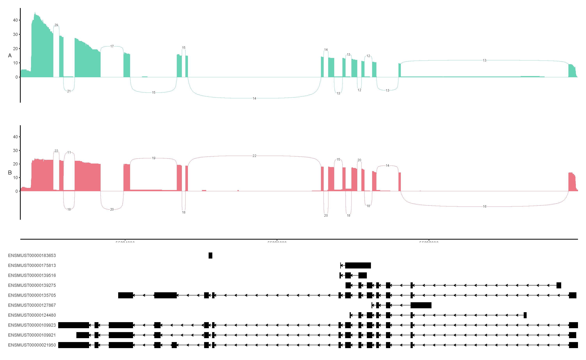
Example of a gene AS plot generated by ggsashimi.
AS Transcript Statistics
cd ~/
mkdir -p plotplot/01.AS_plot/02.AS_stat
cd plotplot/01.AS_plot/02.AS_stat
mkdir input output
cd input
ln -s ~/output/09.AS/00.prepare/ref/ioe/events_*.ioe ./
cut -f 4 events_AF_strict.ioe | sed 's/,/\n/g' | sort | uniq | sed '1d' > AF.transcript.txt
cut -f 4 events_A3_strict.ioe | sed 's/,/\n/g' | sort | uniq | sed '1d' > A3.transcript.txt
cut -f 4 events_A5_strict.ioe | sed 's/,/\n/g' | sort | uniq | sed '1d' > A5.transcript.txt
cut -f 4 events_RI_strict.ioe | sed 's/,/\n/g' | sort | uniq | sed '1d' > RI.transcript.txt
cut -f 4 events_AL_strict.ioe | sed 's/,/\n/g' | sort | uniq | sed '1d' > AL.transcript.txt
cut -f 4 events_MX_strict.ioe | sed 's/,/\n/g' | sort | uniq | sed '1d' > MX.transcript.txt
cut -f 4 events_SE_strict.ioe | sed 's/,/\n/g' | sort | uniq | sed '1d' > SE.transcript.txt
cd ~/plotplot/01.AS_plot/02.AS_stat/output
ln -s ../input/*.transcript.txt ./
singularity exec -B /work ~/Public/Singularity/ComplexUpset.sif Rscript ../script/01.2.AS_upset_plot.R
Output Visualization:
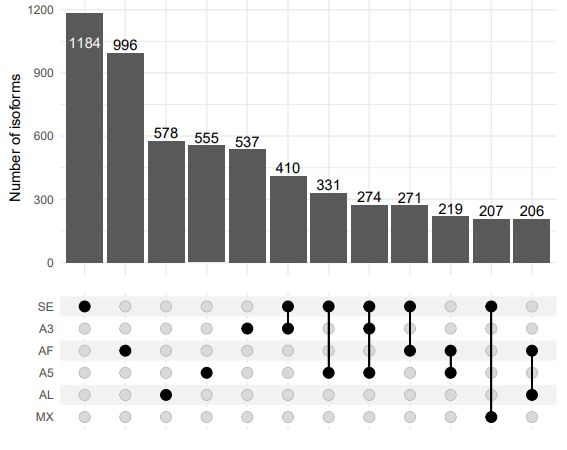
UpSet plot showing the intersection of transcripts associated with different AS event types.
IGV Visualization of APA Genes
mkdir -p plotplot/03.APA_gene_plot_IGV
cd plotplot/03.APA_gene_plot_IGV
mkdir input output
ln -s ~/output/10.polya/01.polya_site/01.get_bed/*.bed input/
cd output
awk 'BEGIN{FS=OFS="\t"} {print $1,$3,$3,$4}' ../input/A1.bed > A1.bedgraph
awk 'BEGIN{FS=OFS="\t"} {print $1,$3,$3,$4}' ../input/A2.bed > A2.bedgraph
awk 'BEGIN{FS=OFS="\t"} {print $1,$3,$3,$4}' ../input/A3.bed > A3.bedgraph
awk 'BEGIN{FS=OFS="\t"} {print $1,$3,$3,$4}' ../input/B1.bed > B1.bedgraph
awk 'BEGIN{FS=OFS="\t"} {print $1,$3,$3,$4}' ../input/B2.bed > B2.bedgraph
awk 'BEGIN{FS=OFS="\t"} {print $1,$3,$3,$4}' ../input/B3.bed > B3.bedgraph
awk 'BEGIN{FS=OFS="\t"} {print $1,$3,$3,$4}' ../input/C1.bed > C1.bedgraph
awk 'BEGIN{FS=OFS="\t"} {print $1,$3,$3,$4}' ../input/C2.bed > C2.bedgraph
awk 'BEGIN{FS=OFS="\t"} {print $1,$3,$3,$4}' ../input/C3.bed > C3.bedgraph
ln -s ~/output/10.polya/01.polya_site/01.get_bed/Mus_musculus.chr13.fa ./
ln -s ~/output/10.polya/02.APA_analysis/sqanti3_corrected.gtf.cds.no_node.gff ./
singularity exec -B /work ~/Public/Singularity/bena_v1.0.0.sif python3 ../script/CPM_nor.py A1.bedgraph A1.nor.bedgraph
singularity exec -B /work ~/Public/Singularity/bena_v1.0.0.sif python3 ../script/CPM_nor.py A2.bedgraph A2.nor.bedgraph
singularity exec -B /work ~/Public/Singularity/bena_v1.0.0.sif python3 ../script/CPM_nor.py A3.bedgraph A3.nor.bedgraph
singularity exec -B /work ~/Public/Singularity/bena_v1.0.0.sif python3 ../script/CPM_nor.py B1.bedgraph B1.nor.bedgraph
singularity exec -B /work ~/Public/Singularity/bena_v1.0.0.sif python3 ../script/CPM_nor.py B2.bedgraph B2.nor.bedgraph
singularity exec -B /work ~/Public/Singularity/bena_v1.0.0.sif python3 ../script/CPM_nor.py B3.bedgraph B3.nor.bedgraph
Output Visualization (IGV Example):
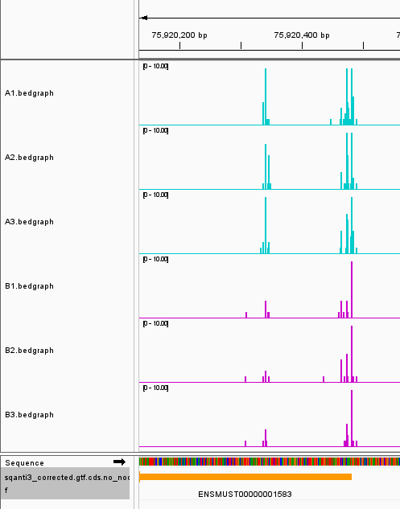
Example of APA gene tracks visualized in IGV.
AS and Poly(A) Length Joint Analysis
cd ~
mkdir -p plotplot/04.exp_polya_length_AS_combine/01.polya_length_AS
cd plotplot/04.exp_polya_length_AS_combine/01.polya_length_AS
mkdir input output
cd input
ln -s ~/output/09.AS/00.prepare/ref/ioe/events_*.ioe ./
cut -f 4 events_AF_strict.ioe | sed 's/,/\n/g' | sort | uniq | sed '1d' > AF.transcript.txt
cut -f 4 events_A3_strict.ioe | sed 's/,/\n/g' | sort | uniq | sed '1d' > A3.transcript.txt
cut -f 4 events_A5_strict.ioe | sed 's/,/\n/g' | sort | uniq | sed '1d' > A5.transcript.txt
cut -f 4 events_RI_strict.ioe | sed 's/,/\n/g' | sort | uniq | sed '1d' > RI.transcript.txt
cut -f 4 events_AL_strict.ioe | sed 's/,/\n/g' | sort | uniq | sed '1d' > AL.transcript.txt
cut -f 4 events_MX_strict.ioe | sed 's/,/\n/g' | sort | uniq | sed '1d' > MX.transcript.txt
cut -f 4 events_SE_strict.ioe | sed 's/,/\n/g' | sort | uniq | sed '1d' > SE.transcript.txt
ln -s ~/output/10.polya/03.polya_length/*.polyA_length.xls ./
cd ../output
ln -s ../input/*.transcript.txt ./
cat AF.transcript.txt AL.transcript.txt | sort | uniq > FS.transcript.txt
cat RI.transcript.txt SE.transcript.txt | sort | uniq -c | singularity exec ~/Public/Singularity/bena_v1.0.0.sif csvtk space2tab | awk '$1 > 1' | cut -f 2 > SE_RI.transcript.txt
cat ../input/*.polyA_length.xls | grep -v 'polya_length' | sed '1ireadname\tcontig\tpolya_length' > all_sample.polyA_length.txt
mv AF.transcript.txt AF.transcript_temp.txt
mv AL.transcript.txt AL.transcript_temp.txt
mv MX.transcript.txt MX.transcript_temp.txt
mv A3.transcript.txt A3.transcript_temp.txt
mv A5.transcript.txt A5.transcript_temp.txt
# Generate polyA length file for transcripts
singularity exec -B /work ~/Public/Singularity/bena_v1.0.0.sif Rscript ../script/04.1.get_sample_length.R
# Plotting
singularity exec -B /work ~/Public/Singularity/bena_v1.0.0.sif Rscript ../script/04.2.polya_length_AS_type.violin.R all_sample.trans.length.txt all_AS_type
Output Files:
all_AS_type.compare_signif.xls: Significance analysis results for the violin plot.all_AS_type.ployA-stat.xls: Data distribution file for the violin plot.all_AS_type.pdf(or .png): The violin plot.
Output Visualization:
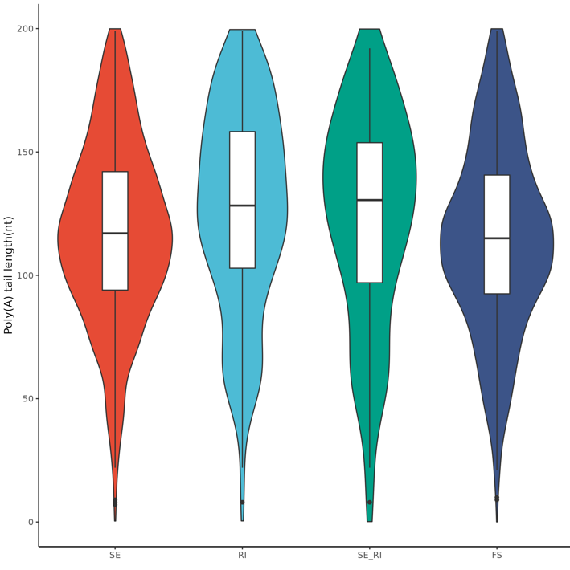
Violin plot comparing poly(A) tail lengths across different AS event types.
Counts and Poly(A) Length Joint Analysis
cd ~
mkdir -p plotplot/04.exp_polya_length_AS_combine/02.exp_polya_length
cd plotplot/04.exp_polya_length_AS_combine/02.exp_polya_length
mkdir input output
cd input
ln -s ~/output/03.reconstruction/sqanti3/sqanti3_corrected.gtf.cds.gff ./
ln -s ~/output/06.expression/03.merge.transcript/isoforms.counts.matrix.xls ./
cd ../output
singularity exec -B /work ~/Public/Singularity/bena_v1.0.0.sif Rscript ../script/04.3.get_merge_sample_transcript_TPM.R ../input/sqanti3_corrected.gtf.cds.gff ../input/isoforms.counts.matrix.xls
singularity exec -B /work ~/Public/Singularity/bena_v1.0.0.sif Rscript ../script/04.4.all_length_TPM_counts_cor_plot.R ../input/all_sample.trans.length.txt total_transcript_tpm.txt total_counts.txt
Output Files:
counts_polya_length_cor.pdf: Correlation plot between counts and polyA length.total_counts.txt: Combined counts matrix for all samples.total_transcript_tpm.txt: Combined TPM matrix for all samples.TPM_polya_length_cor.pdf: Correlation plot between TPM and polyA length.transcript_length.txt: Transcript length file.
Correlation Plots:
The top plot shows the correlation between log2(TPM) and poly(A) length, the bottom plot between log10(counts) and poly(A) length. Darker colors indicate higher data density.
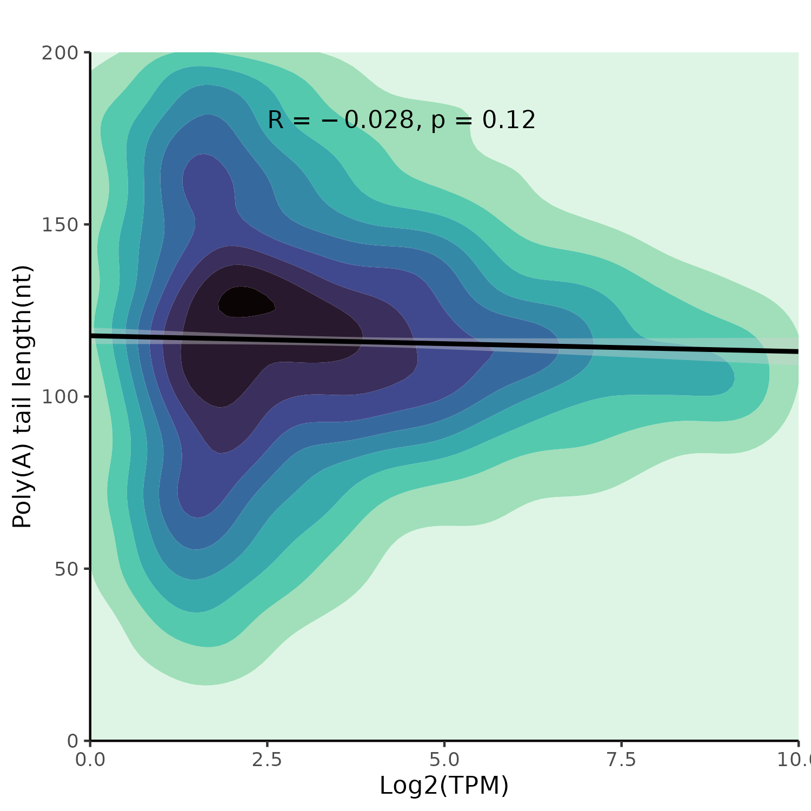
Correlation between log2(TPM) and poly(A) tail length.
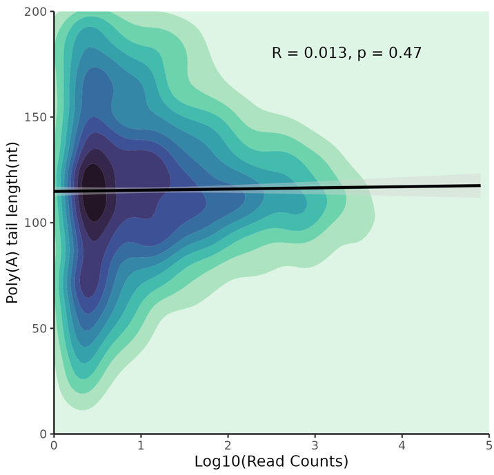
Correlation between log10(counts) and poly(A) tail length.
Sample-wise Poly(A) Length Heatmap
cd ~
mkdir -p plotplot/05.polya_length_heatmap
cd plotplot/05.polya_length_heatmap
mkdir input output
cd plotplot/05.polya_length_heatmap/input
ln -s ~/output/10.polya/03.polya_length/*.polyA_length.xls ./
cd ~/plotplot/05.polya_length_heatmap/output
singularity exec ~/Public/Singularity/bena_v1.0.0.sif Rscript ~/plotplot/05.polya_length_heatmap/script/05.sample_polya_length_heatmap.R ../input/A1.polyA_length.xls A1
Input File Example (A1.polyA_length.xls):
readname contig polya_length
9c8fcb41-d16b-4e18-a5f0-fa9fd40b2a4f ENSMUST00000161581 100
4077b73c-0566-40ca-ba0b-2bc4bd8eca04 ENSMUST00000161581 98
0f8843df-1e64-4dfe-9d36-b006ecb0508c transcript27.chr1.nnic 97
Plotting Method: Reads with poly(A) length >= 10bp are selected. Transcripts with at least 50 reads are included. The x-axis represents poly(A) length from 10 to 250bp (divided into 25 bins). Each row is a transcript. Color intensity (red) represents the proportion of reads for that transcript in each bin.
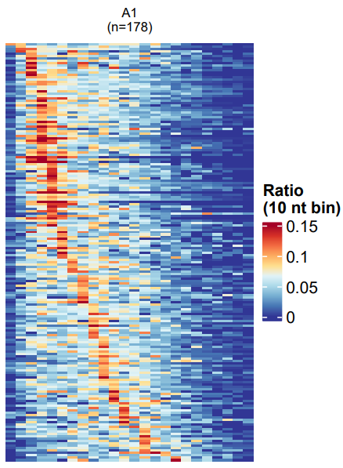
Heatmap showing the distribution of poly(A) tail lengths for highly expressed transcripts in a sample.
GOplot
Source: https://github.com/cran/GOplot
mkdir -p ~/plotplot/
cp -r /work/home/whbnpx/DRS_train/plotplot/08.Goplot富集分析环状图 ~/plotplot/
cd ~/plotplot/08.Goplot富集分析环状图
Script Options:
options:
-h, --help Show this help message and exit
-d DEFILE, --defile DEFILE
Path to differential expression file. Requires columns: c('ID', 'logFC').
log2FoldChange or logFC are acceptable.
-e ENRICHFILE, --enrichfile ENRICHFILE
Path to enrichment result file. Requires columns:
c('ID','Term','Category','Genes','adj_pval'). Some common formats are handled automatically.
-t {go,kegg,other}, --type {go,kegg,other}
Input file type.
-s SIZE SIZE, --size SIZE SIZE
Plot height and width. First value is height, second is width.
-nc NCOL, --ncol NCOL
Number of columns in the legend.
-gs GENESPACE, --genespace GENESPACE
Spacing between gene names and the plot.
-o PREFIX, --prefix PREFIX
Output file prefix.
-in IDTOP, --idtop IDTOP
If 'id' and 'if' are not specified, take the top N entries by padj.
-id IDLIST, --idlist IDLIST
Comma-separated list of IDs (e.g., 'ENSG01,ENSG02').
-if IDFILE, --idfile IDFILE
File with one ID per line.
Usage Examples:
# Example 1: Using a generic enrichment file
# Required columns: ID, Term, Category, Genes, adj_pval
singularity exec -B /work /work/home/whbnpx/DRS_train/Public/Singularity/bena_v1.0.0.sif \
Rscript src/GOplot.R -d input/defile.txt -e input/enrich.txt -o output/out -t other
# Example 2: Using a GO enrichment result file (specific column order)
# Columns: GO.ID, Term, Annotated, Significant, Expected, category, pvalue, rich, SigGenes, padj, qvalue
singularity exec -B /work /work/home/whbnpx/DRS_train/Public/Singularity/bena_v1.0.0.sif \
Rscript src/GOplot.R -d input/A_vs_B_DE_results.xls -e input/A_vs_B.go_enrich.result.xls -if input/ID.list -o output/go
# Example 3: Using a KEGG enrichment result file
# Columns: ID, Description, GeneRatio, BgRatio, pvalue, p.adjust, qvalue, enrichID, Count, rich_factor, Gene_Ratio, fold_enrichment, Class_A, Class_B, Hyperlink
singularity exec -B /work /work/home/whbnpx/DRS_train/Public/Singularity/bena_v1.0.0.sif \
Rscript src/GOplot.R -d input/A_vs_B_DE_results.xls -e input/A_vs_B.ko_enrich.xls -t kegg -o output/kegg
Example Output:
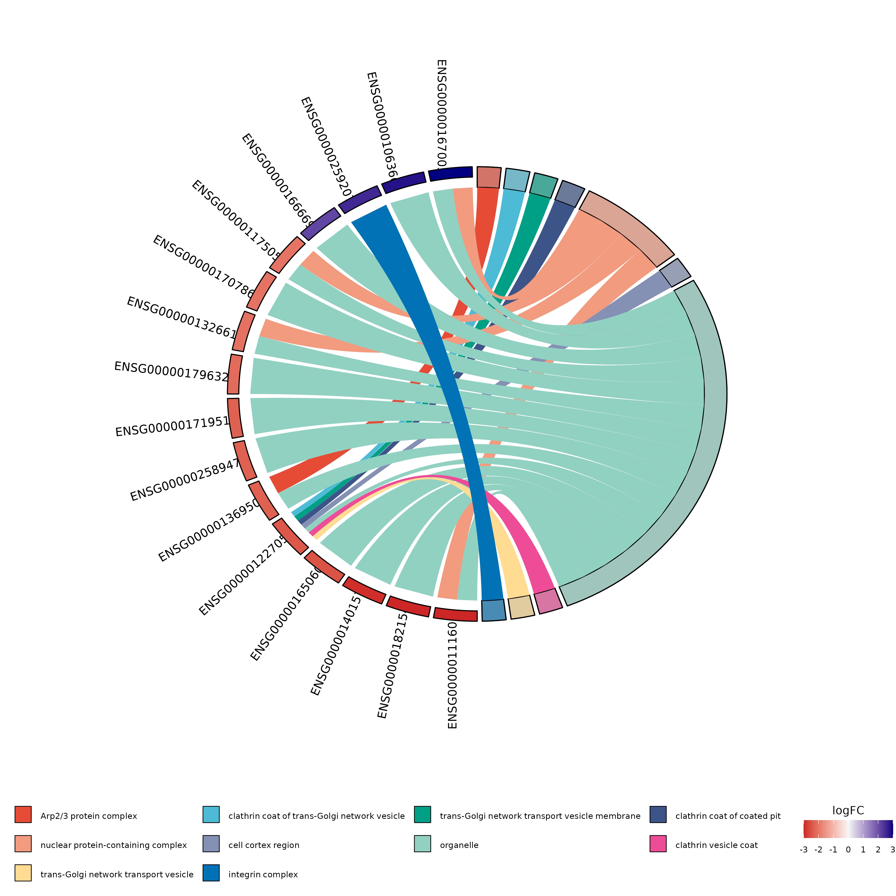
Example of a circular plot generated by GOplot.
DEG/DEI Statistical Bar Chart
mkdir -p ~/plotplot/
cp -r /work/home/whbnpx/DRS_train/plotplot/10.DEG_DEI统计柱状图 ~/plotplot/
cd ~/plotplot/10.DEG_DEI统计柱状图
Usage:
Usage: Rscript plot.R data.txt prefix
Usage: Rscript plot.R <path_to_data> <output_file_prefix>
1. Input (data.txt):
Category Time Up Down
DEIs d2 271 391
DEIs d4 794 1061
DEIs d6 412 629
DEGs d2 90 191
DEGs d4 557 812
DEGs d6 202 443
PolyA d2 129 50
PolyA d4 111 83
PolyA d6 116 62
2. Run:
singularity exec -B /work /work/home/whbnpx/DRS_train/Public/Singularity/bena_v1.0.0.sif Rscript src/plot.R input/data.txt output/out
3. Output Example:
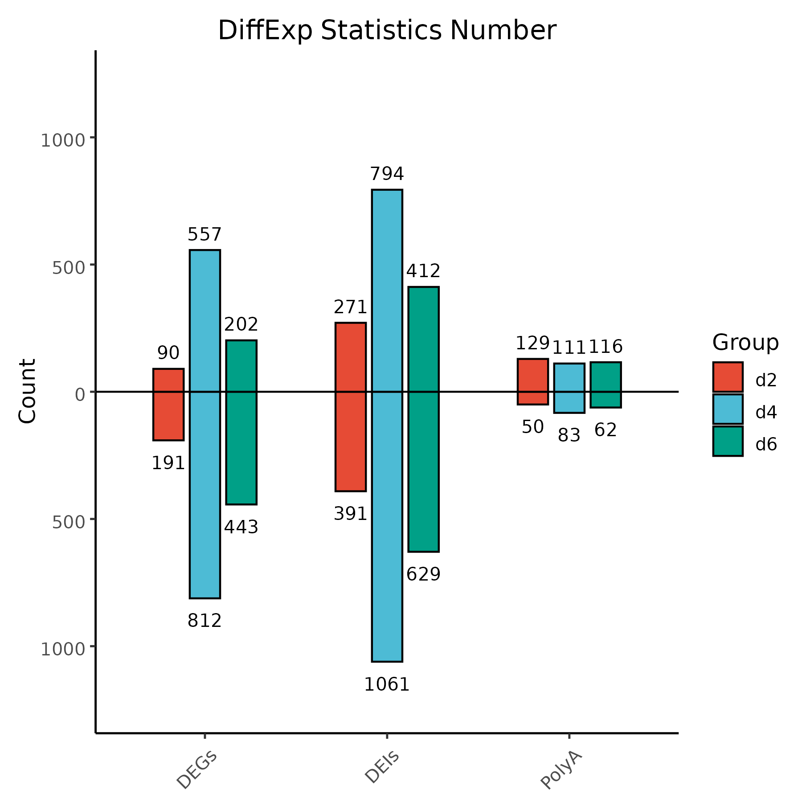
Bar chart showing the number of up- and down-regulated features (DEIs, DEGs, PolyA) across different time points.
SQANTI3 Statistics Plots
mkdir -p ~/plotplot/
cp -r /work/home/whbnpx/DRS_train/plotplot/09.SQANTI3统计图 ~/plotplot/
cd ~/plotplot/09.SQANTI3统计图
Options:
Options:
-c CLASS, --class=CLASS
Input classification file.
-j JUNCT, --junct=JUNCT
Input junctions file.
-o PREFIX, --prefix=PREFIX
Output file prefix.
-h, --help
Show this help message and exit.
1. Input Files:
classification.txt
isoform length exons structural_category SCEN_B01840.t16 528 2 antisense SCEN_B02040.t1 180 2 antisense SCEN_B02240.t1 753 3 antisense SCEN_B02240.t2 827 2 antisense
junctions.txt
isoform chrom strand genomic_start_coord genomic_end_coord junction_category canonical RTS_junction SCEN_A00370.t1 CP046081.1 + 62123 62285 novel canonical FALSE SCEN_A00370.t2 CP046081.1 + 61045 62469 novel canonical FALSE SCEN_A00370.t3 CP046081.1 + 61389 61480 novel canonical FALSE SCEN_A00370.t4 CP046081.1 + 61471 62250 novel canonical TRUE SCEN_A00370.t5 CP046081.1 + 62242 62296 novel canonical TRUE
2. Run:
singularity exec -B /work /work/home/whbnpx/DRS_train/Public/Singularity/bena_v1.0.0.sif \
Rscript src/plot.r -c input/isoquant_classification.txt -j input/isoquant_junctions.txt -o output/out
3. Output Examples:
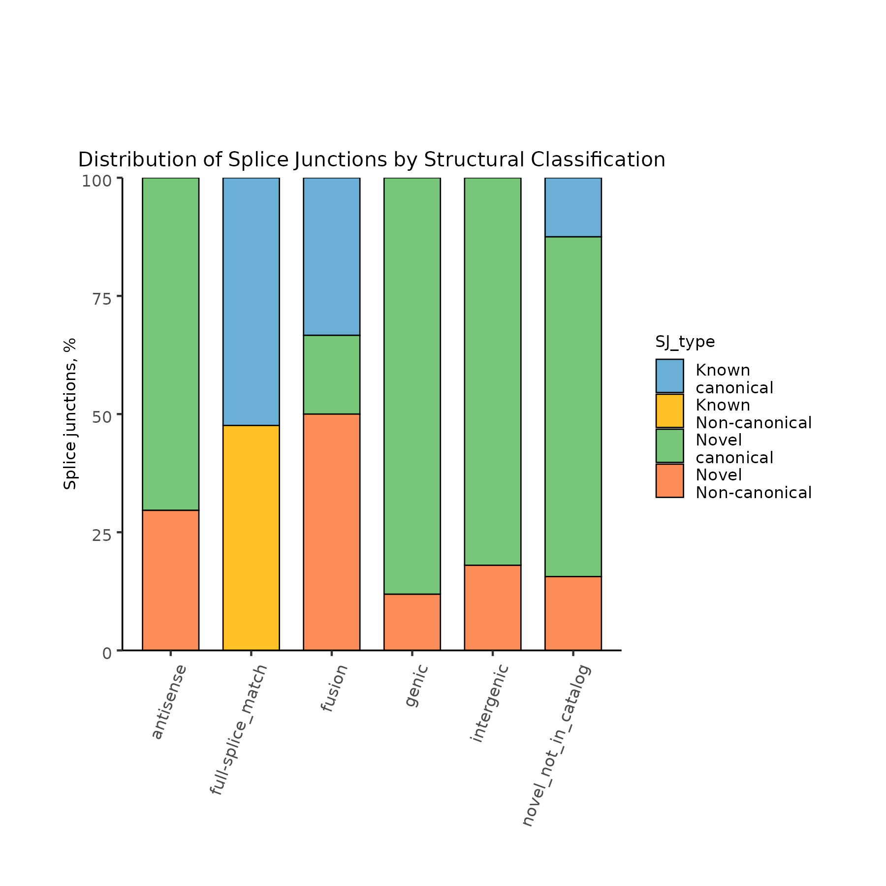
Distribution of splice junctions by structural category.
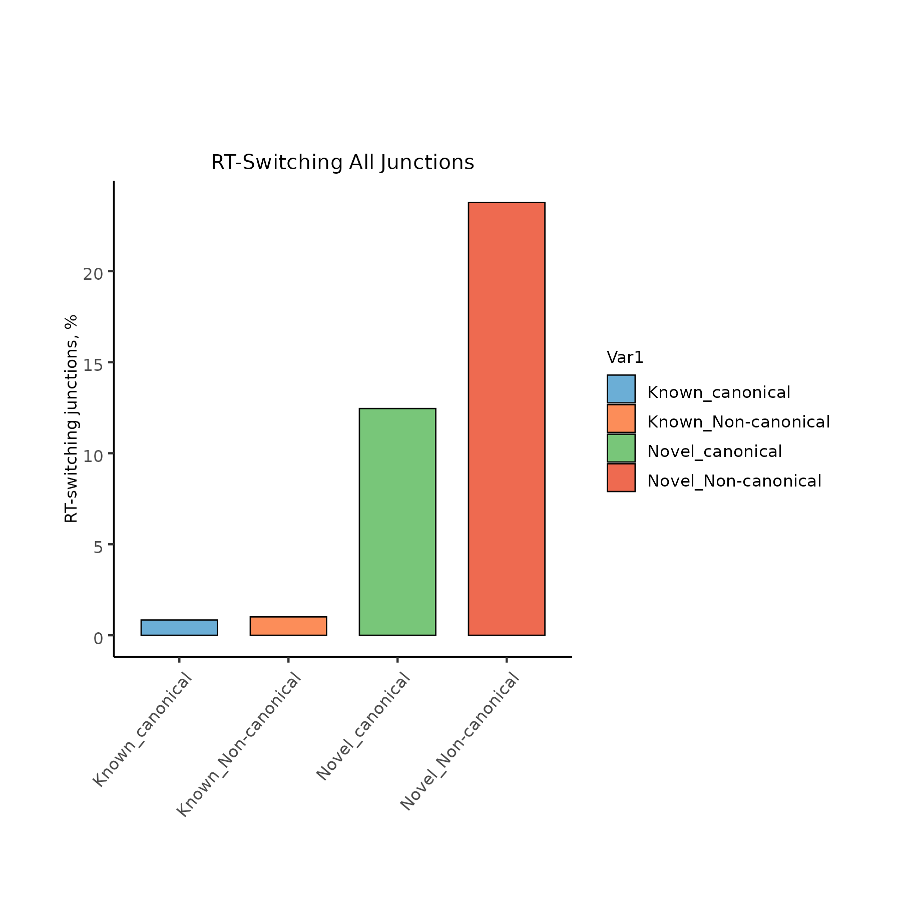
RT switching analysis for all junctions.
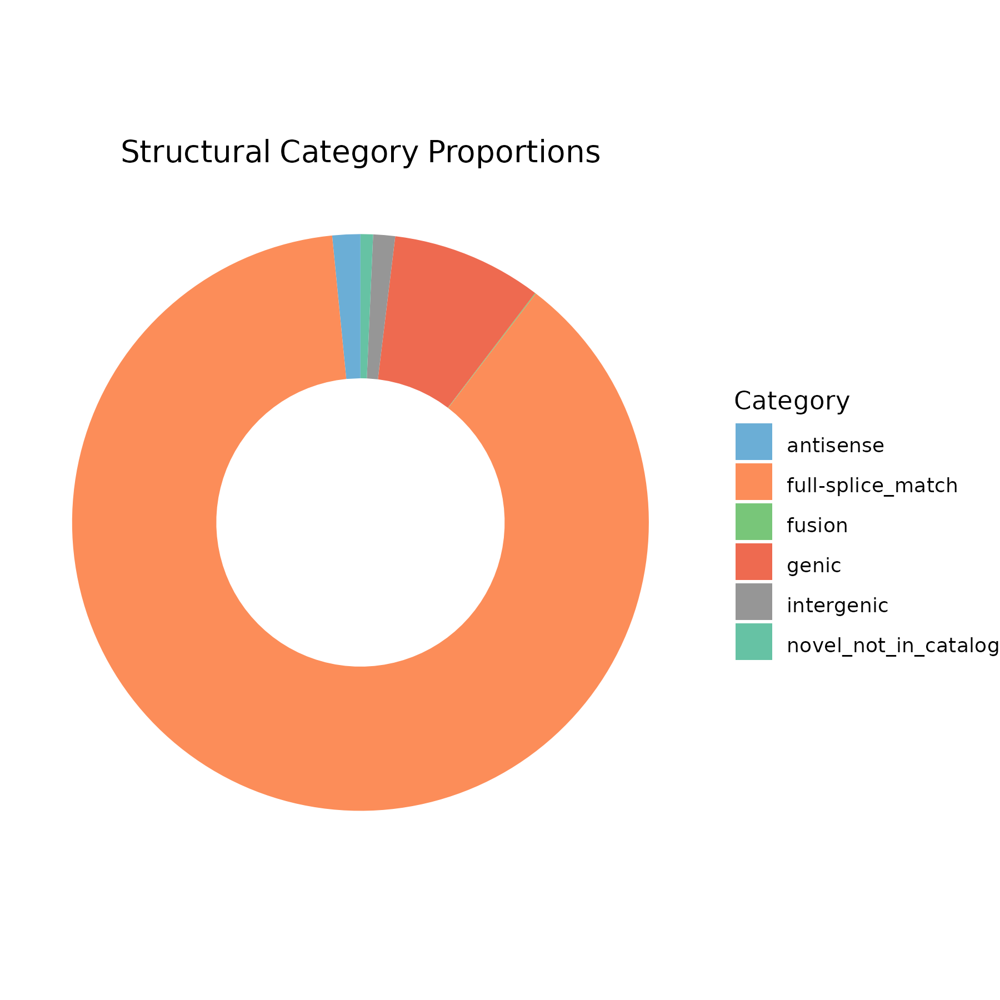
Proportions of different structural categories.
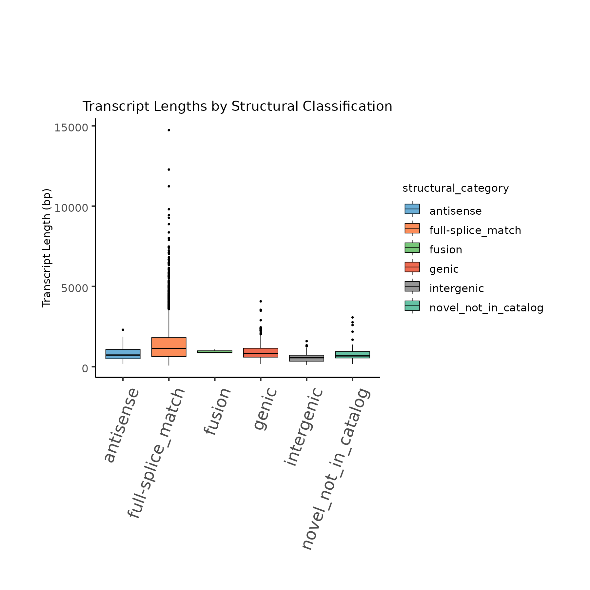
Transcript lengths categorized by structural classification.
Modification Site Density Across Gene Regions
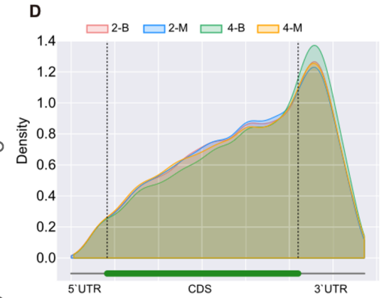
Density distribution of modification sites across rescaled gene regions (5’UTR, CDS, 3’UTR) for different groups.
# Required files:
# region_size.txt: Determines the rescaling size.
# *psU_result.xls: Determines modification site distribution.
# sample_group: Determines sample groups.
mkdir -p Figure_10/F2/
cd Figure_10/F2/
ln -s ../../output/20.modification/psU/1.bed/*.psU.result.0.7.xls .
ln -s ../../input/sample_group/sample_desc.txt .
ln -s ../../region_size.txt .
# Define group merging rule (intersection, union, present in at least N samples). Here, present in at least 2 samples.
singularity exec -B /work /work/home/whbnpx/DRS_train/Public/Singularity/bena_v1.0.0.sif Rscript /work/home/whbnpx/DRS_train/script/08.meth/merge.R sample_desc.txt
singularity exec -B /work /work/home/whbnpx/DRS_train/Public/Singularity/bena_v1.0.0.sif Rscript /work/home/whbnpx/DRS_train/script/08.meth/cds-utr_plot.R region_size.txt merged_psU_results.txt All_group.psU.density
Result:
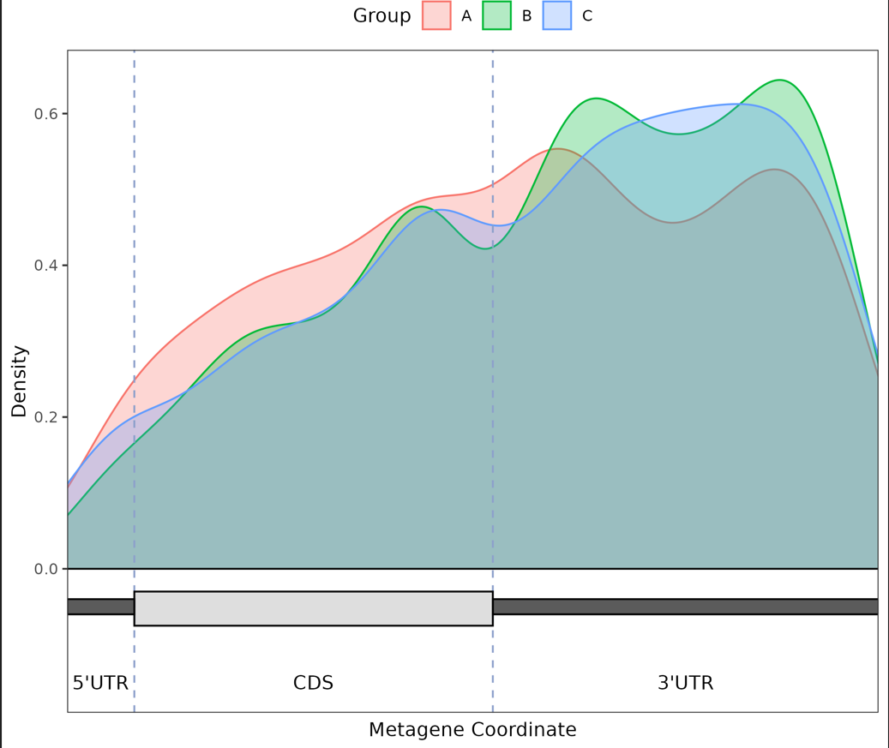
Final density plot of modification sites across gene regions for different groups.
Modification and TPM Relationship
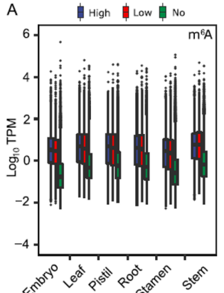
Boxplot showing the relationship between transcript expression levels (log10(TPM)) and modification status (High, Low, No) across different groups.
# Required files:
# *psU_result.xls: Determines modification site distribution.
# sample_group: Determines sample groups.
# isoforms.TPM.matrix.xls: Expression levels.
mkdir Figure_10/F6
cd Figure_10/F6
ln -s ../../output/20.modification/psU/1.bed/*.psU.result.xls .
ln -s ../../input/sample_group/sample_desc.txt .
ln -s ../../output/06.expression/03.merge.transcript/isoforms.TPM.matrix.xls .
# Logic:
# X-axis: Group
# Y-axis: Expression level
# Fill/Color: Modification status (High > 0.7, Low between 0 and 0.7, No = 0 or not present)
# Steps:
# 1. Calculate group mean expression for Y-axis.
# 2. Determine modification status for each transcript in each group.
# 3. Combine and plot.
singularity exec -B /work /work/home/whbnpx/DRS_train/Public/Singularity/bena_v1.0.0.sif Rscript /work/home/whbnpx/DRS_train/script/08.meth/Group_mean.R sample_desc.txt isoforms.TPM.matrix.xls
singularity exec -B /work /work/home/whbnpx/DRS_train/Public/Singularity/bena_v1.0.0.sif Rscript /work/home/whbnpx/DRS_train/script/08.meth/TPM_label.R --sample-desc sample_desc.txt
Result:
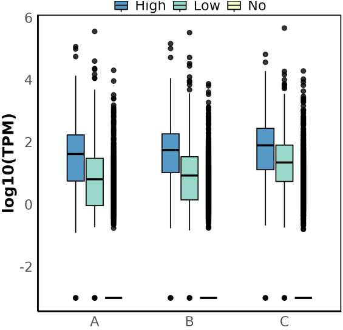
Final boxplot showing TPM distribution across modification statuses for each group.
Modification Motif Radar Chart
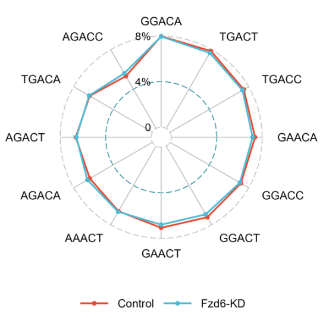
Radar chart displaying the proportion of different sequence motifs around modification sites for each group.
# Required files:
# *psU_result.xls: Determines modification site distribution.
# sample_group: Determines sample groups.
mkdir Figure_10/F7
cd Figure_10/F7/
ln -s ../../output/20.modification/psU/1.bed/*.psU_result.xls .
ln -s ../../input/sample_group/sample_desc.txt .
# Logic:
# 1. Calculate motif percentages.
# 2. Plot radar chart.
singularity exec -B /work /work/home/whbnpx/DRS_train/Public/Singularity/bena_v1.0.0.sif Rscript /work/home/whbnpx/DRS_train/script/08.meth/motif_ratio.R --sample-desc sample_desc.txt
singularity exec -B /work /work/home/whbnpx/DRS_train/Public/Singularity/ggradar.sif Rscript /work/home/whbnpx/DRS_train/script/08.meth/group_radar.R